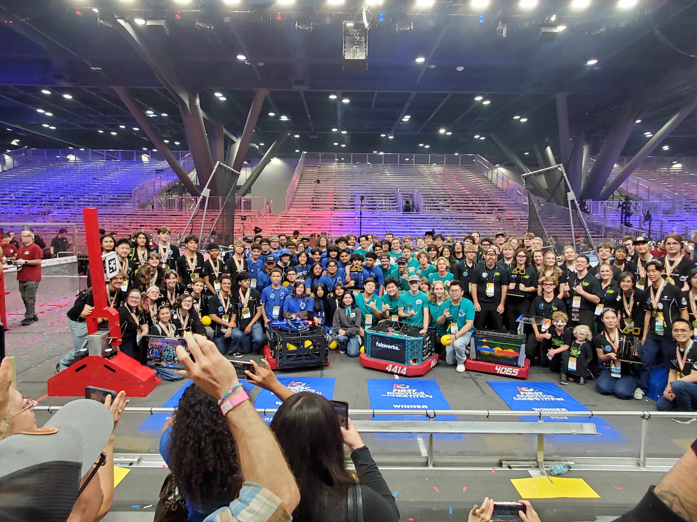

Think with your hands.
Explore mechanical design, fabrication, and bringing a physical system to life.

 TEAM 4414
TEAM 4414Robotics brings us together. The people beside us make the experience matter.

HighTide Robotics, founded in 2018, provides opportunities for high school students from all around Ventura County, CA to participate in a competitive and meaningful way through the FIRST robotics competition. Students learn career-oriented skills in engineering, design, mathematics, computer science, and are inspired by industry professional mentors and FRC alumni dedicated to helping foster a competitive FRC team and educating team members.
Founded in 2018, HighTide brings together high school students from across Ventura County. In 2026, our alliance reached the biggest stage in FIRST and became World Champions.
High school students across Ventura County: bring your curiosity, build your skills, and help shape our next robot. Industry professionals and FIRST alumni: share your experience as a mentor.
Explore mechanical design, fabrication, and bringing a physical system to life.
Explore programming, electronics, and the connection between software and the real world.
Explore photography, communication, organization, and the work that keeps a team moving.
Curiosity and a willingness to learn are a great starting point. Ask the team about current opportunities and what participation involves.
Robotics connects design, manufacturing, programming, communication, and teamwork. Explore the areas that interest you and discover how they fit together.
Email info@team4414.com to ask about current opportunities. Explore our robot history and shared photo archive to see the team in action.
Explore the robot ↗